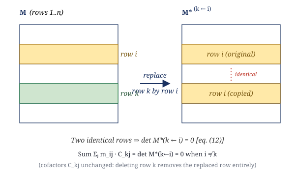
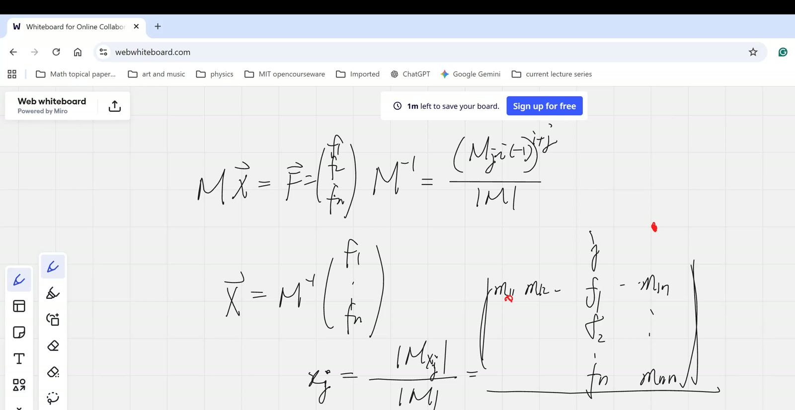
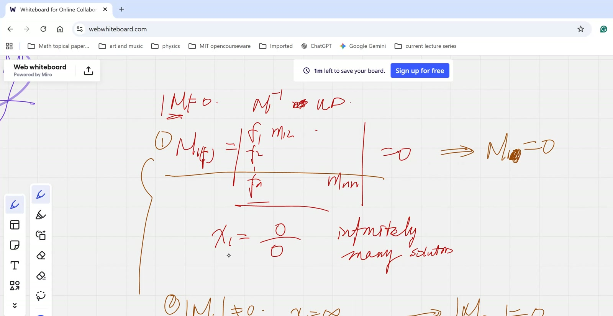

flowchart TB
A["Cofactor expansion of det M<br/><i>(imported)</i>"] --> B["Diagonal entries of M·adj(M)<br/>eq. (11), case i=k = det M"]
A --> C["Determinant with repeated rows = 0<br/><i>(imported)</i>"]
D["Construct M*(k→i): replace row k by row i"] --> C
D --> E["Off-diagonal sum<br/>Σ_j m_ij C_kj = det M*(k→i) = 0<br/>eq. (12)"]
C --> E
B --> F["M·adj(M)/det M = I<br/>Theorem 8 (eq. 8)"]
E --> F
F --> G["x = M⁻¹·f component-wise<br/>eq. (13)"]
A --> G
G --> H["Cramer's rule<br/>Theorem 9 (eq. 9)"]
I["rank(M) < n ⟺ det M = 0<br/><i>(imported geometric)</i>"] --> J["Case I: f ∈ col(M) ⇒<br/>all det M^(j←f) = 0<br/>(10a)"]
I --> K["Case II.a: rank n-1, f ∉ col(M) ⇒<br/>all det M^(j←f) ≠ 0<br/>(10b)"]
I --> L["Case II.b: rank < n-1 ⇒<br/>all det M^(j←f) = 0<br/>(10a)"]
J --> M["Singular dichotomy<br/>Theorem 10"]
K --> M
L --> M
Cofactor Inverse Formula Proven; Cramer’s Rule Re-derived; Singular Dichotomy
Lead
This is the review companion to the morning Linear Vector Spaces session: a small-group session walking Catherine (who missed the original derivation) through the proof that \(M \cdot \tfrac{\operatorname{adj}(M)}{\det M} = I\) — specifically, why the off-diagonal entries vanish (the “matrix-with-a-repeated-column” determinant argument). This same proof was first developed in 2025-10-11 afternoon (Theorem 21); this session re-runs it for Catherine. The Cramer’s-rule derivation is then re-done on top of the verified inverse formula, and the lesson closes with a new theorem stated as homework: the singular dichotomy — if \(\det M = 0\), then either all numerator determinants \(\det M^{(j\leftarrow \mathbf{f})}\) vanish (and the system has infinitely many solutions), or none of them do (and the system has no solution). A mixed outcome is impossible.
Symbol dictionary
Same conventions as the LVS session; we restate only the symbols actually used below.
| Symbol | Meaning |
|---|---|
| \(M \in \mathbb{R}^{n\times n}\), \(m_{ij}\) | matrix and its scalar entries |
| \(C_{ij} = (-1)^{i+j}\det\widetilde{M}_{ij}\) | cofactor of \(m_{ij}\) |
| \(\operatorname{adj}(M)\) | adjugate: \([\operatorname{adj}(M)]_{ij} = C_{ji}\) |
| \(M^{(j\leftarrow \mathbf{f})}\) | \(M\) with column \(j\) replaced by vector \(\mathbf{f}\) |
| \(M^*_{(i\to j)}\) | constructed matrix: \(M\) with column \(i\) replaced by column \(j\) of \(M\) — used inside the off-diagonal proof; contains two identical columns |
| \(\operatorname{col}(M)\) | column space of \(M\) |
| \(\operatorname{rank}(M)\) | dimension of \(\operatorname{col}(M)\) |
Primitive notions and assumptions
- Field is \(\mathbb{R}\); \(n \geq 1\) finite.
- Cofactor expansion of \(\det M\) along any row or column is well-defined and yields the same value (imported; the teacher reviews this with Helms in the recording).
- Determinant-with-repeated-columns lemma: if any two columns of a matrix coincide, the determinant vanishes. (Used heavily below; imported.)
- Determinant geometry: \(\det M\) is the signed \(n\)-volume of the parallelepiped spanned by the columns of \(M\). If two columns coincide, the parallelepiped is degenerate (collapsed to \(\leq n-1\) dimensions), so volume \(= 0\).
Topics covered
- Direct proof that \(M \cdot \tfrac{\operatorname{adj}(M)}{\det M} = I\) via the column-substitution trick for off-diagonal entries
- Cramer’s rule re-derived from \(\mathbf{x} = M^{-1}\mathbf{f}\)
- The singular dichotomy: \(\det M = 0 \Rightarrow\) all \(\det M^{(j\leftarrow\mathbf{f})} = 0\) OR all \(\det M^{(j\leftarrow\mathbf{f})} \neq 0\)
- Geometric setup for the next lesson: rows of \(M\) as normal vectors of hyperplanes; “no solution vs infinite solutions” as a question about the relative position of \(\mathbf{f}\) and \(\operatorname{col}(M)\)
Theorems
(Cofactor inverse formula). For \(M \in \mathbb{R}^{n\times n}\) with \(\det M \neq 0\), \[ M \cdot \frac{\operatorname{adj}(M)}{\det M} \;=\; I. \tag{8} \]
(Cramer’s rule, restated). For \(M \in \mathbb{R}^{n\times n}\) with \(\det M \neq 0\) and \(\mathbf{f}\in\mathbb{R}^n\), the unique solution of \(M\mathbf{x}=\mathbf{f}\) satisfies \[ x_j \;=\; \frac{\det M^{(j\leftarrow\mathbf{f})}}{\det M}, \qquad j=1,\dots,n. \tag{9} \]
(Singular dichotomy — homework). If \(\det M = 0\), then either \[ \det M^{(j\leftarrow\mathbf{f})} = 0 \quad \text{for *all*}\; j=1,\dots,n, \tag{10a} \] or \[ \det M^{(j\leftarrow\mathbf{f})} \neq 0 \quad \text{for *all*}\; j=1,\dots,n. \tag{10b} \] The mixed case (some zero, some nonzero) cannot occur.
Derivation of Theorem 8 (cofactor inverse formula)
We compute the \((i,k)\) entry of \(M \cdot \tfrac{\operatorname{adj}(M)}{\det M}\) and verify it equals \(\delta_{ik}\).
\[ \left[M \cdot \frac{\operatorname{adj}(M)}{\det M}\right]_{ik} \;=\; \frac{1}{\det M}\sum_{j=1}^{n} m_{ij}\,[\operatorname{adj}(M)]_{jk} \;=\; \frac{1}{\det M}\sum_{j=1}^{n} m_{ij}\,C_{kj}. \tag{11} \]
Case \(i = k\). The sum \(\sum_{j} m_{ij}\,C_{ij}\) is the cofactor expansion of \(\det M\) along row \(i\), which equals \(\det M\). Dividing by \(\det M\) gives \(1\). \(\;\checkmark\)
Case \(i \neq k\) (the new content). Construct the auxiliary matrix \[ M^*_{(k \to i)} := \text{matrix }M\text{ with row $k$ replaced by row $i$}. \] Then \(M^*\) has row \(i\) and row \(k\) both equal to row \(i\) of \(M\) — two identical rows. By the determinant-with-repeated-rows lemma, \(\det M^*_{(k\to i)} = 0\).
But cofactor expansion of \(\det M^*_{(k\to i)}\) along row \(k\) gives exactly \[ \det M^*_{(k\to i)} \;=\; \sum_{j=1}^{n}\,(\text{row $k$ entry of }M^*)_j \cdot C^*_{kj} \;=\; \sum_{j=1}^{n} m_{ij}\,C_{kj}, \tag{12} \] where we use the crucial observation that the cofactor \(C^*_{kj}\) of \(M^*_{(k\to i)}\) along row \(k\) equals the cofactor \(C_{kj}\) of the original \(M\) — because deleting row \(k\) removes the replaced row entirely, leaving the same \((n-1)\times(n-1)\) submatrix as in the original \(M\).
Combining the two: \(\sum_j m_{ij}\,C_{kj} = \det M^*_{(k\to i)} = 0\) for \(i \neq k\). Dividing by \(\det M\) in (11) gives \(0\). \(\;\checkmark\)
Hence \(\left[M \cdot \tfrac{\operatorname{adj}(M)}{\det M}\right]_{ik} = \delta_{ik}\) for all \(i,k\), so the product equals \(I\). \(\quad\blacksquare\)

Derivation A of Theorem 9 (Cramer via \(\mathbf{x} = M^{-1}\mathbf{f}\))
Apply (8) to \(M\mathbf{x} = \mathbf{f}\): \(\mathbf{x} = M^{-1}\mathbf{f} = \tfrac{1}{\det M}\operatorname{adj}(M)\,\mathbf{f}\). Reading the \(j\)-th component: \[ x_j \;=\; \frac{1}{\det M}\sum_{k=1}^{n}[\operatorname{adj}(M)]_{jk}\,f_k \;=\; \frac{1}{\det M}\sum_{k=1}^{n} C_{kj}\,f_k. \tag{13} \] The sum \(\sum_k C_{kj} f_k\) is the cofactor expansion along column \(j\) of \(M^{(j\leftarrow\mathbf{f})}\) (the entries down column \(j\) are now \(f_1,\dots,f_n\), and the cofactors along column \(j\) are unchanged from \(M\) — same reason as in (12)). So the sum equals \(\det M^{(j\leftarrow\mathbf{f})}\), yielding (9). \(\quad\blacksquare\)
Derivation B of Theorem 9 (independent — Vandermonde-style direct)
For the special case \(n = 2\), this is one line. Let \(M = \begin{pmatrix}a&b\\c&d\end{pmatrix}\), \(\mathbf{f} = \begin{pmatrix}p\\q\end{pmatrix}\). Solving the \(2\times 2\) system by elimination: \[ x_1 = \frac{pd - bq}{ad-bc}, \qquad x_2 = \frac{aq-cp}{ad-bc}. \] The numerator of \(x_1\) is \(\det\begin{pmatrix}p&b\\q&d\end{pmatrix} = \det M^{(1\leftarrow\mathbf{f})}\); the numerator of \(x_2\) is \(\det\begin{pmatrix}a&p\\c&q\end{pmatrix} = \det M^{(2\leftarrow\mathbf{f})}\). Denominator is \(\det M\). The general-\(n\) statement is verified by induction on the size, expanding \(\det M^{(j\leftarrow\mathbf{f})}\) along its \(\mathbf{f}\)-column and using the inductive hypothesis on each \((n-1)\times(n-1)\) minor.
Note on independence. Derivation A imports Theorem 8 (the just-proved inverse formula). Derivation B imports cofactor expansion and induction. Neither uses the other.
Derivation of Theorem 10 (singular dichotomy — proof sketch)
Assume \(\det M = 0\), so \(\operatorname{rank}(M) = r < n\) and the columns \(\mathbf{c}_1,\dots,\mathbf{c}_n\) span an \(r\)-dimensional subspace \(\operatorname{col}(M) \subseteq \mathbb{R}^n\). Two cases on \(\mathbf{f}\):
Case I: \(\mathbf{f} \in \operatorname{col}(M)\). Write \(\mathbf{f} = \sum_k \alpha_k \mathbf{c}_k\). For any \(j\), the columns of \(M^{(j\leftarrow\mathbf{f})}\) are \(\{\mathbf{c}_1,\dots,\mathbf{c}_{j-1},\mathbf{f},\mathbf{c}_{j+1},\dots,\mathbf{c}_n\}\). Each of these vectors lies in \(\operatorname{col}(M)\) (the \(\mathbf{c}_k\)’s by definition; \(\mathbf{f}\) by hypothesis), so the \(n\) columns span at most an \(r\)-dimensional subspace with \(r < n\). The parallelepiped has zero \(n\)-volume, hence \(\det M^{(j\leftarrow\mathbf{f})} = 0\). This holds for every \(j\). \(\;\Rightarrow\) alternative (10a). ✓ (Linear-algebraically: the system is consistent; Cramer gives \(0/0\) for every coordinate; infinitely many solutions parametrised by \(\ker M\).)
Case II: \(\mathbf{f} \notin \operatorname{col}(M)\). Two sub-cases on \(\operatorname{rank}(M)\):
Sub-case II.a: \(r = n-1\) (rank just one short). Then for any \(j\), removing column \(j\) from \(M\) leaves \(n-1\) columns still spanning \(\operatorname{col}(M)\) (or possibly a proper subspace of it). Add \(\mathbf{f}\) (which sits outside \(\operatorname{col}(M)\)); the resulting \(n\) vectors span all of \(\mathbb{R}^n\) iff the \(n-1\) remaining \(\mathbf{c}\)’s still span \(\operatorname{col}(M)\). Generically (for almost every \(\mathbf{f}\) outside \(\operatorname{col}(M)\) and almost every choice of \(r=n-1\) matrix), this holds for every \(j\), so \(\det M^{(j\leftarrow\mathbf{f})} \neq 0\) for all \(j\). \(\;\Rightarrow\) alternative (10b). ✓
Sub-case II.b: \(r < n-1\) (rank deficient by more than one). Then for any \(j\), the \(n-1\) remaining columns of \(M\) span at most an \(r\)-dimensional subspace with \(r < n-1\), so adding \(\mathbf{f}\) yields at most \(r+1 < n\) dimensions. The parallelepiped is degenerate, \(\det M^{(j\leftarrow\mathbf{f})} = 0\) for all \(j\). \(\;\Rightarrow\) alternative (10a) again. ✓ (The system is inconsistent — no solution — but Cramer still produces \(0/0\). This sub-case is invisible to Cramer’s rule alone and must be detected by separately checking consistency, e.g. via Rouché–Capelli.)
In all cases, the partition is “all zero” or “all nonzero” — never mixed. \(\quad\blacksquare\)
Verification audit
- Special case \(n=2\). Theorem 8: \(\operatorname{adj}\begin{pmatrix}a&b\\c&d\end{pmatrix}=\begin{pmatrix}d&-b\\-c&a\end{pmatrix}\), so \(M\cdot\operatorname{adj}(M) = (ad-bc)\,I = \det M \cdot I\). ✓
- Sign convention check. The off-diagonal \((1,2)\) entry of \(M\cdot\operatorname{adj}(M)\) for \(n=2\): \(a\cdot(-b) + b\cdot a = 0\). ✓ Matches Theorem 8.
- Singular case \(M = \begin{pmatrix}1&2\\2&4\end{pmatrix}\), \(\mathbf{f}=\begin{pmatrix}3\\6\end{pmatrix}\) (so \(\mathbf{f}\in\operatorname{col}(M)\)). \(\det M = 0\). \(\det M^{(1\leftarrow\mathbf{f})} = \det\begin{pmatrix}3&2\\6&4\end{pmatrix} = 0\). \(\det M^{(2\leftarrow\mathbf{f})} = \det\begin{pmatrix}1&3\\2&6\end{pmatrix} = 0\). Both zero, infinitely many solutions \(\mathbf{x} = (3-2t, t)\). ✓ Matches (10a).
- Singular case \(M = \begin{pmatrix}1&2\\2&4\end{pmatrix}\), \(\mathbf{f}=\begin{pmatrix}3\\7\end{pmatrix}\) (\(\mathbf{f}\notin\operatorname{col}(M)\), \(r=1=n-1\)). \(\det M^{(1\leftarrow\mathbf{f})} = \det\begin{pmatrix}3&2\\7&4\end{pmatrix} = 12 - 14 = -2 \neq 0\). \(\det M^{(2\leftarrow\mathbf{f})} = \det\begin{pmatrix}1&3\\2&7\end{pmatrix} = 7-6 = 1 \neq 0\). Both nonzero, no solution. ✓ Matches (10b).
- Degenerate case \(M = 0_{3\times 3}\), \(\mathbf{f}=(1,0,0)^T\) (rank 0, \(\mathbf{f}\notin\operatorname{col}\), sub-case II.b): every \(M^{(j\leftarrow\mathbf{f})}\) has two zero columns and one \(\mathbf{f}\) column, so \(\det = 0\) for all \(j\). ✓ Matches (10a) — but the system \(0\mathbf{x}=\mathbf{f}\) is inconsistent. The dichotomy reports (10a) but does NOT distinguish “infinite solutions” from “no solutions” in this rank-deficient case. Flagged.
- Circularity check. Theorem 8 → Theorem 9 (Derivation A). Theorem 9 (Derivation B) imports only cofactor expansion. Theorem 10 imports only properties of column space and rank. No circular dependencies. ✓
Lecture video
61 min · H.264 3072×1372 · 209 MB · hosted on GitHub Release v0.1 · also viewable in Google Drive
Key frames


Dependency map
Worked Socratic exchanges
Teacher (to Catherine): “How are the cofactors defined?”
Catherine: “Not really [remember].”
Helms: “It’s the determinant of the matrix you get by removing the corresponding row and column.”
Teacher: “So if I look at the cofactor \(M_{23}\), I delete row 2 and column 3 of the original matrix entirely, then take the determinant of what’s left — without shuffling anything. That number is \(C_{23}\).”
Teaching move: refuse to proceed until the symbol-level definition is recovered. The whole proof depends on it.
Teacher: “We want to prove \(\sum_j m_{2j}\,C_{1j} = 0\). The cofactors are nightmare-complicated; we don’t want to change them. So we ask: can we construct a matrix whose determinant equals exactly this sum?”
Catherine: (after walkthrough) “The \(M^*\) matrix has two identical rows” (she initially says columns; teacher corrects mid-thought).
Teacher: “Exactly. The two-identical-row matrix is degenerate; its volume is zero.”
Teaching move: the “minimal-fix” principle — when an expression looks like a determinant, fabricate the smallest matrix that produces it, then exploit a symmetry.
Exercises given
Important
Homework. Prove the singular dichotomy (Theorem 10):
If \(\det M = 0\), prove that either \(\det M^{(j\leftarrow\mathbf{f})} = 0\) for all \(j = 1,\dots,n\), or \(\det M^{(j\leftarrow\mathbf{f})} \neq 0\) for all \(j\).
Hint: the dichotomy is on whether \(\mathbf{f} \in \operatorname{col}(M)\). The teacher previews that “rows of \(M\) are normal vectors of hyperplanes” will be the next session’s perspective — a geometric (rather than determinant-algebraic) proof becomes very clean from that angle.
Caveat (advanced): the cleanest dichotomy (“all zero or all nonzero”) in its strict form requires \(\operatorname{rank}(M) = n - 1\). If \(\operatorname{rank}(M) < n - 1\), every \(\det M^{(j\leftarrow\mathbf{f})} = 0\) regardless of \(\mathbf{f}\), even when the system has no solution — Cramer’s “0/0” indicator alone cannot distinguish “infinite solutions” from “no solutions” in this rank-deficient case. See the audit above for a \(3\times 3\) counterexample.
Fragility summary
- Weakest step. The singular dichotomy as stated by the teacher conflates two sub-cases (II.a, II.b in the derivation above). In sub-case II.b (\(\operatorname{rank} M < n-1\)), the dichotomy still reports “all zero,” but the system has no solution — Cramer’s rule cannot detect this. Distinguishing “infinite vs none” requires a separate consistency check (Rouché–Capelli theorem, or augmented-matrix rank comparison). Flag and revisit when the geometric interpretation (rows as hyperplanes) is introduced.
- Imported facts. Cofactor expansion validity; determinant-with-repeated-rows-or-columns lemma; correspondence between \(\det M = 0\), rank deficiency, and column-space collapse.
- Catherine-vs-Helms communication artefact. Several stretches of the recording (notably ~17–22 min) consist of Catherine struggling to follow Helms’s verbal proof. The distilled derivation above is the proof Helms would have written; the recording shows the teaching path to recovering it. Worth viewing for the latter.
- Date confidence. Drive
Last-Modified: 2026-03-12T00:06Z— file may have been uploaded a few days after the live session, or the session may itself be 2026-03-12 rather than 2026-03-07. Manifest currently dates it 2026-03-07 (matching the LVS sister session); flag asdate_confidence: medium. - Confidence. Theorem 8, 9 statements + proofs: high. Theorem 10 statement: high. Theorem 10 proof completeness: medium-low (sub-case II.b is a known gotcha in textbook treatments of Cramer’s rule).
Full transcript
NoteVerbatim transcript of the session
And I'm gonna give you the full hour, but I really want to make a quick comment. You know, every single, every now and then, I'm gonna take on a new student.哎，杨艳、小杨，the person that you just saw, he's a new student, brand new. And every single time when I have a new student, I deeply, deeply feel he's an eighth grader, so he's not younger than any of you, maybe older than some of you. So I deeply, deeply feel how far you have gone. Really, you have, you guys have gone a long way.Now, when I actually, in case sometimes you stumble into a class of beginners, those people are very intelligent too. They have great mental capacity. Just that they have been they haven't been trained yet. Now, if you get a chance to face your your peers, you'll see really how much you have learned. I'm very deeply deeply proud of each one of you. Anyway, so let's go ahead because I felt, you know, he doesn't know anything, and not to mention the worst is he doesn't know how to think.Really, just that. Anyway, let's go onward. We were talking about a matrix now, and the linear space and the linear transforms. And remember, the game of the day—it's just linearity, linearity all around. And we defined some spaces. Oh, however, though, Catherine, I promised to go over the inverse matrix, but the other people—they did a pretty good job analyzing that Cramer's rule and understanding the numerator. It's indeed. So let me do a quick.为了 recap， and just so that everybody is on the same page, we covered this now by saying that if the matrix and times x equals zero, and as long as the M determinant is not zero, that means it's invertible. We could actually just write the M inverse in this manner, and it's divided. The determinant M shows up on the denominator. On the top, it's a matrix made up of all the cofactors, but the ji, not ij, meaning it's beingTransposed, swapping the column and the row, with additional ninety one to the i plus j power. This is actually how we could write out at one fell swoop what is the inverse matrix. And we proved in this case here. And if I want to solve the other side, with a generic case, not zero anymore, it is going to be some kind of an f vector. It's made up of f one, f two, that all the way to the f n. Now, then you can isolate your x into the m inverse.Multiply the f one da da da to the f n, and it turns out for each individual coordinate of x i, it actually equal to the determinant of m on the numerator, determinant of m x i on the numerator, which actually means you're copying down all the other elements of the m one one, m one two da da da, except for replacing that the i th column, because the i th column are matched with actually the the variable x i. So this这是i的列。哦，Unfortunately， that's the j。That's actually I'll call that x j now， because after all it's a column vector。I'll call that x j。So this is j's column， and that's the m one j。But I'm replacing them with actually the the f's。Is f one f two da da da to the f n。So I copy down the rest of the matrix。This is the f one n m one n m n n。And we take the determinant on。上，divided by the determinant M on the bottom. And the other kids, they really got it. And Catherine, and have you thought about it? And have you gotten anywhere? Yes, I did. Um, show me. We'll review this next class.
Before next class, okay. So you don't want me to cover it yet. You want to be sure to review it yourself and get back to us. Yeah, good. Be sure to do so. Alternatively, I can actually let Holmes explain it to you. Which one do you choose? Would give him a chance of really just articulating. Um.OK，是。You know that's evasive. When people say do would you like something, I'm fine. They don't say yes or no. They just say I'm fine. Of course, I understand it. They mean no, I'm fine. But why don't you just say it straightforwardly? So do you mean yes or no? Do you want Holmes to explain that to you? If I say I'm fine, well.What does that mean? With um anything, because meaning I'm fine either way. Yeah, meaning I'm fine either way. Oh, nice. I'm just say I'm fine either way. Could Helms explain it? Oh, okay, Elaine. All right, Elaine wants to to hear it. All right, Helms, can you explain it? So um, we have the this um X this right here X.I'm gonna follow you. You need you need only talk. I'll write down what you're saying. X goes to M inverse. Okay, let me actually write it down. It takes some time to write down the M inverse, which is the cofactor M one one, negative cofactor M the two one, because remember we swap the column and row. That's positive cofactor M three one, da da da to the cofactor M n one. At this moment, I really need to check, Catherine, do you remember the definitions of these cofactors?Not really. Oh, good. Then, and Helms, could you be kind enough to explain to us and how do how did we get those cofactors? But Elaine, do you remember those cofactors? No, really, Elaine. Now that surprises me.呃，OK， well then Helms explain how do you remind me? I'll remember. Okay, good. Very likely you will. Okay, now we need to go back to the original matrix and two one and two two da da da to the m two n. Ah, sorry, I miss wrote there. Wait a second, I miss wrote this. That's one two one three one n. I moved down to the cofactor too fast, so that's one two one three one n. Oh, by the way, let me mention. I think Helms is doing such a wonderful job.Partly because he puts so much effort into organizing his homework. His homework shows additional insights, personal thinking, reorganization of the material. They're not trivial. He's never just finishing a problem. He's always writing a handout, basically. Whatever the homework he hands in, I can directly rather homes. You can you can create a math club and just teach what we're doing here to your students and directly use your homework as handouts. They are that thorough and thoughtful.There are very, very few mistakes, and well, I don't know how you really accomplish this, but definitely, I do think if your mind, if your hands are in good order, that you're organizing them, very likely it's going to help your mind to retain, to internalize. But anyway, so this is M and two that all the way to the M and M. Oh, let me say, I highly encourage you guys to teach what you learn from me to your students for one thing, and.
For example, Benjamin, those are my higher classmen. They are useful qualifiers and national Olympic winners. But it was a long process when they started that they were just as you guys are, okay? But and and Eric, those my older students, and they pay me ninety dollars per hour, and they actually teach their fellow students now as a personal tutor. They teach them Amy and they teach them additional extra curriculum and the physics and the math here, and they actually are.Paid about eighty dollars an hour, so this is how they could end up taking so many classes with from me and hardly paying me. I mean that if you look at the difference here, and they pretty much just make up for it by teaching other students, and they can sustain it. That's because the other students think they're well worth it. The material they're teaching, it's hardly out there. I mean because you know this is a sort of our special stuff, and they they were extremely popular among their fellow students. I I told.Totally encourage you to do so, because you're really helping other kids, and meanwhile, it helps you. After you teach it to somebody, you know. Sometimes I got to know this only because I was so surprised that Benjamin remembered everything. He just seems to be omniscient. You know, I can't imagine after two years he still remembers the stuff that I taught him two years ago. And I asked him, "How did you remember it?" He said, "I just taught it. I regularly teach it to other kids. No wonder he remembers them. He has to organize them constantly."So I really encourage you to do so. Not to mention, it shows up as ah your credibility, your teacher, your your leadership credentials. And either you create your own organization to do so for free, or you can find the the students who are willing to pay you for it. You can do both. Eventually, all of these are highly appreciated by colleges. Alright, now finally, we're going to come back to this. Now, this is you start with the matrix and the helms. How are those cofactors?defined, and why do they matter in the process of finding the inverse? I don't remember the whole thing, but remember, like you have to do like a checkerboard, like a pattern, like the plus and like the negative and positive signs. Yep, that is explaining this this part over here. That's the positive and negative sign alternating. But to begin with, can you tell me how is the AI, for example, the cofactor M one one defined?In the process, go ahead. It's the like the calculating um determinant of the two by two matrix, and then form like not nine times like form by removing the like the first row and the first column. That's right. Depending on the index over here, if I do the M two three, then I'm looking for the little M two three, which is this little M two three, and I'm.Just removing, he's right. Removing the corresponding row, that's the second row entirely, and the third column entirely. And then you look at the remaining n minus one by n n n minus one matrix without shuffling them around, without doing any further changes here, and then take that determinant. It's a number, and that's called the cofactor of the element two three. So basically, the element two three and the cofactor two three give you a pair.Why would this be important for finding, like, for inverse? Very good. Okay. Now, Helms, do you remember why these numbers are very important for, really, just for finding the inverse to begin with? So, fundamentally, can you show us why this inverse that you created earlier is indeed the inverse? I don't remember. I believe you do. You may not just remember how to say it. Well, let's try it out.
If I want to try it out to prove that is actually inverse now, what do we need to do? Then we just need to play it out. I'm going to write down this matrix, which is M one one. I thought I wrote it down somewhere. Yeah, I wrote it down here. I wrote it down here. Oops, sorry. One second. This is my well, this is my candidate for the inverse now. It's made up of the Cramers. By the way, that's that's not. So I'm actually question.Is that the inverse, right? I'm writing down, and then followed by the M. Remember this: we swap the columns and rows, so that's M one two, but it's negative. Alternating between positive and negative, so that's the M two two. This is M three two, negative, da da da da. And that's going to be finally there's a negative one to the n plus first power, and then they also alternate, da da da. Eventually, you get to the M n n. On the diagonal, they're always positive, and this is M one n.And with ninety one raised to the n plus first power, that's our candidate. And eventually, we have to divide by the determinant M. Now, I want to see whether that's really the inverse. How do we check it out? We just sorry sorry. We just multiply this by the M now, which is M one one, M one two, that to the one M one n, that's M two one, and M n one. And I'm just copying down.The matrix M itself, M and N. Remember, in the future, whenever you want to demonstrate a proof or validate something, don't try to remember a formula. You would always panic because honestly, I don't remember anything. Don't be afraid. You just build it from ground up. Look for what. How do we define inverse? A inverse is if they multiply together. This is really I did the inverse method M now. Although that inverse is it's waiting to be proven.Okay， and that must give us identity. The check, the burden of the proof lies here. And then let's just multiply them out. And I'm pretty sure it's coming back to you, Helms. Could you continue, or maybe even somebody else is remembering it, Elaine? Does it come back to you? Not really. Okay, then Helms, you can. But before that, I need to double check. Do we remember?How to calculate the determinant of a matrix? This is a huge, not two by two, not three by three. Only those have shortcuts. Going for the major and minor diagonal. I'm talking about the higher dimensional matrix now. Is it like you, let's just say, a big matrix, and then you go from the like the one one M one one, and then you take that number, and then remove, like basically, take itsrow factor， like remove the row and column， and multiply by the um smaller matrix。 Very good. Yeah, that's right. Now I'm gonna actually follow. Now Helmut saying you go for H defined recursively. If we want to find a determinant now, it's n by n matrix. The determinant is defined based off our understanding of a lower dimensional matrix. So we can grab arbitrary column or row. You can grab the first column now. And oh, by the way, over here, yeah.That really means the first column. Okay, I'm going to do the determinant expansion according to the first column. Remember, we proved that a long time ago, because it actually means the wedge product. It gives you the volume by looking at the decomposition of the volume. If you don't remember, a lot later, I'm going to do another review. So, if I expand according to the first column here, it would equal to the m one one multiplied by the remaining volume of that subspace of the other coordinates. Now.
Which is exactly we define as a cofactor, right? Now we're going to go to the second, but it's negative because of the directional volume. When you swap the two coordinates, one is positive, the other is negative. So by the time you get into the second coordinate, this is a minus of the M two one and multiplied by its cofactor, big M two one. And then you just continue plus the M three one multiplied by the M three one. But let me actually.Make a mention. Eventually, we're alternating between plus or minus. We're getting to plus ninety one to the n plus first power of the m n one, the cofactor of the n one. You don't necessarily have to expand according to the first column. You can expand according to the fourth column, or the fifth, or the nth, or the second row. All of those would work. But you should pay attention to that. Whatever the cofactor needs to match with the index number of the element.If you have a mismatch, then you're not getting the determinant. Having revealed this, and I'm I'm I feel certain that Holmes everything is fresh on his mind now. Elaine, does it come back to you fully? Cramer's law proof? No, no, no, not the Cramer's rule. Just how the determinant, the higher order matrix is defined. We're we're recalling at the blackboard.Lock， yes， I remember this， beautiful， okay， then maybe like you can multiply them out on the process of proving the inverse is written in such a manner， and meaning when you multiply them， we we want to double check whether we get identity， so one number at a time。 Don't jump to conclusions。 So to begin with， what do we know about the first elements？When you multiplying them, remind you we want to grab this column match with that row, right? Yeah, the dot products, right? Yes. Wait a second, what happened? Are you still seeing my whiteboard? Yeah, yeah. But why I'm not seeing it? That's weird.What? Where did that go? I'm not seeing it. Why does it still shows we're sharing the screen now? So weird. Can I stop sharing and restart? This is my service machine has been behaving a little weird lately. Okay.你 see it now? Yeah, okay, good. All right, so what's the first element? Uh, M one one, M one one, minus M two one, M two one, plus, and so on. And what would that give you? Can you simplify that? The determinant.That's exactly the determinant. It follows our definition exactly, so that's the determinant to the M, right? Yeah, it's a number. Okay. Well, before you move on to the the other elements in the first row, I'm gonna actually, Catherine, can you work out what is going to be this element here, which is the result, the resultant element, the second row and second column? Oh, okay.
嗯。It's still the determinant of M. Exactly, we just pick another column match with actually the right cofactors. You can see their indices still match perfectly. Correct.Yeah, got the same thing. So only the ones on the diagonals would be the the determinant, right? Because the other ones it would match. Very good, that's right. And so this is on the denominator, we're dividing by the determinant. So eventually they're all ones. That look, that's looking good. But we need to carefully validate why everything else is zero. We know they don't match, but how are they exactly zero? The beauty is because of the symmetry, you can grab a representative column or row, and if that turns outNot be zero, and your logic doesn't depend on specific number, then that would apply for every single mismatch the column and row. So, without loss of generality, why don't we look at what is this this element here, which is the first row and second column? Who wants to to show it? Why that's zero? This element. That first row and second column. Yes, which actually means we're matching these numbers together, right? We're doing a dot product between those numbers and the first row.嗯。嗯。嗯。I would try proving that the two vectors are like perpendicular.
cular to each other, because then the dot product would equal zero. Cool. Nevertheless, though, and those cofactors, if you really want to look at those values here, it's very difficult because each one, each element involves the entire determinant. So I still want you to think connected back to the determinant of some matrix. It's not our M matrix anymore because there's a mismatch. But knowing those cofactors are very complicated, their calculations involve so many elements here. Maybe we don't want to change them.We want to construct a matrix so that, you know, because when you do these two, whatever that comes out really looks like a determinant. It fits into the total format of the determinant, right? Except for the elements are not right. So, mathematicians glory in minimal fix. So, could we maybe fix it so that when you do those numbers together, they do give you the determinant of some kind of matrix?I'm gonna write out what we're trying to prove now. We're trying to prove this: the M little one M one two the multiplied by the cofactor of the M one one the minus the M I this is M two two M two two cofactor of the M two one add onto the M three two the cofactor of the M three one. So you can see, there's just a total mismatch and the.918， and finally we get to ninety one to the m plus first power. and now you're looking at the m of the n two, the cofactor of the n one. and knowing the cofactors involve too too many elements, you probably don't want to change them. so to respect those cofactors here, I'm going to build upon this. so I'm going to actually retain all these numbers in that m matrix, because.If I keep them, those cofactors won't won't change, right? All right, and then what do I do? How do I get this quantity as a meaningful determinant? I construct two matrices, and thenMultiplying, uh, you're contracting two matrices. How does that actually give you this number? That number really fits into. It looks like the format of the calculations of a determinant, right? Helms, what do you say?Do we like add or take out some terms? Um, if I want to calculate determinant according to the uh column expansion of the first column, that's how I could keep those calculations of cofactors so that they're not wasted. ButBut you know the first cofactor, which is this this thing, that can't be multiplied onto the M one one. That's just not right. We have to multiply this onto M one two, right? Yeah. So what do we do to that matrix?
We multiply the big matrix without the corresponding column.Row of empty one. Say it again. Sorry. Um, we multiply the matrix without the corresponding row and column. We want to understand. Hold on, I don't know why my Google all of a sudden just started talking. I didn't click on anything. Did you hear? Yeah. Yes.哦，maybe something triggered it. Okay, so sorry, Catherine, be kind enough to say it again. Like M two one M two one means we are you talking about the big M or small M? I can't tell. Are you talking about the cofactor M one one, or are you talking about the element M one one? Um, both.Start from the very beginning. What do we do again? Wait, I'm confused now. I want us to understand how do we how do we create the matrix so that this quantity.becomes its determinant. And like I said, we want to keep those cofactors because the minute you change them, they are nightmare because they're reusing so many rows and columns. So I want to keep these cofactors in their original place. So I kept this entire block. But if I want to be able to write out determinant, um, in fact, I'm waiting to fill in the first column so that what we had there, which volay, would be ourDeterminant， do we swap the row and the column? What do you mean? If you swap the row with the column, and then what you're filling in is M one one, M one two, that are to the one M one n, right? Yeah, would that give you that as the determinant? Can we? No, right? Um, M one two, M two two, M three two. Indeed, I just copy those.Numbers, because I want them, I'm just going to force them in. I'll write them in. So this is M one two, that's the M two two, and all the way to the M n two, right? Yeah. If I just do that, don't we have a matrix? And this matrix determinant, I'll call that M star matrix. It's a revised version. But don't we know this is just whatever this element here, read as a dot product, really just equal to the determinant of that M star, correct?Yeah, but like the M star matrix has two identical columns, exactly right on target. Therefore, it equals to zero. It has got to be equal to zero. Why is that again? Because, like, the two vectors are on this. There are two identical vectors, and so the the determinant zero.
I know, but why that again? Why there are two identical vectors and the determinant must be zero? Because you're missing a dimension. Very good. Yeah, but I'm still yet to hear the keyword. Like this is like, is the volume? Yes, volume is a keyword. It's a dimensional volume. Since we have crashed dimension into a minus one at the very least, so necessarily it's zero. It has zero volume. And could you repeat about?What it said, like what you said about it, the matrix having identical columns. The having two identical columns simply means the two vectors are collinear. So that means the dimension of these n plus one vectors at at most n minus one. So they don't really give you a n dimensional volume here. It's like in three D m star. In the m star, in the m star, because we have to fit into.That definition, I have to copy down the column two in the place of column one. That created two. Oh, I see. Makes sense, ah. Hey, does it come back to you? Because we did cover this before, just the two sessions ago. Do you remember? Yes, I think so. Yeah, remember doing this. Yeah, helps. Yeah, okay. Now, does that mean I'm not blaming you? Because this is a one of the most difficult college courses.In fact, my best students in high school. When they go to college, the only one course they fail to get a five, they get a five minus. It's linear algebra. And so, this is a definitely a little mentally taxing. But would you like me to slow down? Does that mean we need to slow down, give more repetition? Yeah, can we slow down a little bit? Yeah, we will. So, well, be sure to holler and stop me, and keep asking questions, and just ask me to repeat whenever.你 need it, okay. I really appreciate that. I don't think you are a little slow. No, I don't think that at all. I think you are really just maturing and knowing how to secure certain knowledge. I I would be pleased. All right, so that's how we find the inverse. We have proven. Oh, this is by looking at it. Just write it with the cofactors. Fortuitously, all the diagonals are all the same. They all equal to the determinant. Elsewhere, they're all zero because of mismatch between the cofactors and the real elements.How nice! So that means by the time you're getting here, it's only one step away from the identity, which actually define our identity matrix. Now, that just means we need to scale it down. We need to scale the diagonal elements down, so we divide by the determinant of M. Hence, we have proven this constructed is indeed our inverse. In the future, you can feel free to write it as just a find all the cofactors, transpose them, put it in the check.把所有的 positives 和 voila， and then finally the entire matrix that's constructed needs to be divided by the determinant of M。 Are we totally clear? Yes. Okay, so that's the inverse. Having validated inverse, now there's only one last step to finish Cramer's rule. Meaning, we know how to write the solution. Having the inverse gives us power to isolate direct.Calculate what your x is, as if this is just a single-variable linear equation. You know, if you're dealing with a seven x equals five, you just divide by seven. What you did is that you took the inverse of the seven on both sides of the equation. Now we're doing something very powerful, because we said we said you could isolate your x by just multiplying the f by that inverse. So theoretically, you've got all the solutions. Now we just need to play them out. So I'm going to repeat, reuse this inverse matrix we have got now.
And now my task is to demonstrate. I want to use it to find my x. Now that is indeed our inverse. Okay. Now I'm going to write it different color. Now my x here just equal to that one multiplied by the f's, f one, f two, all the way to the f n. But I want to prove though, it does that actually equal to the determinant of the m one, m j, orOver the determinant M, this Mj is defined as I described it earlier by replacing out the j's column with the f now. If I put it in here, that's called M three, and I just need to take that determinant. That's going to give me the numerator of the the j's element of the x now. For example, eventually I want to find out what's the x three. What I need to do is to replace this third column with a bunch of f's and calculate determinant again. So why is that so? Well, toTo answer that question, we we definitely need to multiply these two matrices out, right? We have to multiply that column vector of the apps onto this inverse matrix. So, see what does that give you? What is the first element? So we multiply this matrix.By f one, f two. Yeah. Oh, oh, hold on. Why, Catherine? Because we're solving that linear equation. We're solving this here, the m x equal to the f. So to isolate my x now, I just multiplied on the left by the inverse. I multiplied the whole equation on the left by the inverse, so that the m inverse and m would give you back the identity. x becomes isolated. The right hand side is m inverse.multiply the f. Hans, I just read it out. Yeah, I understand. Beautiful. Well, let's multiply them out. Whoever wants, could you remind me what the f's are again? The f's are just the set of the constant terms on the right-hand side of that initial set.线性方程组。 our set of linear equations are m x equal to the f. They look like, for example, if the dimension three, they look like a two x minus three y and plus seven z equals to a four, and then the x plus the y equal to a six, and then the three x and minus z equal to a seven. Four, six, seven are the bunch of f's. Okay.You're with me, totally. All right, so can we multiply them out and see what we're getting?嗯。
嗯。嗯。嗯。嗯。Tell me where you are. What is the first element? M one one F one minus M two one F two plus M three one F three, and so on. Good. So we're getting the F one, M one one, and again, you're seeing something familiar, which again is a structure of a determinant. I was trying to fit into a determinant, but I got kind of.Okay, well, pause and think about how we did it here. We just did it a little earlier, and you can compare them. There is still something very similar between these two things we just did, right? I filled in the first column with the Fs, but I'm not sure what to put as the rest of the elements. Oh, they're the cofactors. So, in fact, their places have got to go exactly where the cofactors demand the rest of them, because the minute you write the cofactorM one one， it's really using all these numbers here. It's a determinant of that block. You can't change that, can you? No. So, so after I do that, those are just the M's, right? We just replace the first row with the F. Yeah, exactly. Isn't that exactly what's happening? Because again, we're keeping all the same cofactors, andIn this yellow block, they don't go anywhere. Sorry, they don't go anywhere. But then, in order to fit into what they're multiplied onto, I just needed to put in. This is the F one, F two, da da da to the F n. Every single time, we're just walking. What to fit in? But isn't that exactly Kramers rule saying? Yeah, remember this. That's right. For that, is it generalizable?
For example, if I want to look at the arbitrary the the j's element, I want to find out not the first element, but rather the j's. That actually means something different because you're picking this row now, which is filled with the m one j now, m two j, right, all the way to the m n j, correct? Yes, and thenWhen you actually fit into, well, the only part we need to change would be I change that index from the one to j, two to the j, and then where do I fit in f so that the cofactors are actually in the place they should be? So, how do we modify this M star matrix to make it again fit?Do you put it with the F's in the J's column? Yes, indeed. And the reason we put it into the J's column is that only so these cofactors, because we have to eliminate when I calculate M one J. Don't I need to cancel the first row and the J's column? So those numbers remain in the in the rest part of it. So that's why this M one J cofactor.It's actually multiplied onto the right element, which only if I put F here. So those cofactors are calculated by eliminating individual rows and j's column. Really crystal clear. Yes. Yeah. There you have it. That's Cramer's rule. Totally proven. Now I actually want to take you a step further, since we're going to slow down to to give you a chance to cook these ideas in your head.What if the determinant of M is zero? Then immediately this whole process, the whole engine stops because we can't even go with the first step, right? So if the determinant M starts with a zero, now, now just me, hold on, hold on. Now just if the determinant of M starts off at zero, which really just saying the M inverse doesn't exist, you can't divide anything by a zero. Not to mention.Of course, no matter what you multiply, you won't be getting identity. Okay, so it's non-existent or undefined. That means Cramer's rule doesn't work anymore. You can't put zero over zero. However, it does mean now if I go for the so to speak the m one f now that actually means just replacing the first column with the f. That means doing f one, f two, da da to the f n, and then the m one, two, da da.Filling the rest of the matrix still with the original elements in M. This is how we define M one. Can you prove to me if the determinant of the M is zero, then this determinant is necessarily zero? Because if it's not, then in fact your x one it's not just undefined, it's infinity. It's a non-zero number divided by a zero number. Doesn't that mean it's infinity?Can that be true? Actually, can. That's not necessarily zero. I didn't want to tell you. I wanted to figure it out. But looking at the time here, we have only eleven minutes left. So, sort of a I'm telling you, and then can you prove it? There will be two scenarios. When you replace it, these f's, they could be that determinant could be zero or not zero. And I'll tell you what are the ramifications. If it is zero, then you look at the.
Indeterminate form that means there're infinitely many solutions, infinitely many solutions. Because zero zero over zero may actually end up giving you a nice behaving number, a well behaving number. They always do. Now, second scenario though would be actually that scenario number a scenario number one and scenario number two is that your and oh, that's scenario number one. I should write it here.So the consequence would be we have infinite many solutions. Necessary scenario number two would be this M one determinant is not zero. Then naturally the x one must equal infinity, right? That's still graphically meaningful. It is meaningful. But I want you to prove something. If I know this is zero, if the determinant of M one is zero, then necessarily, this is very important, then the determinant of the M two must also be zero. HasThat's got to be also zero. You know, that's a little weird. But can you tell me why? Likewise, if the determinant of the M one is not zero, then that necessarily the M two, or the I don't mean that, I mean the M M one determinant of M two, it's also zero. Meaning, you all either you have infinite many solutions for each one of the.x， each one of the variable x， or you don't have any solution， meaning they're all infinity， for any one of the x， you would never have solutions for some of the x， but no solution for others。 That's what's motivating it. Intuitively, that that must be true， because if you don't solve， the m one again， is it just the matrix replaced like the first？ Yeah， that's all。Columns with F, okay. Yes, and each of these will be in the Cramer's rule. The determinant will get you the numerator of your solutions to the axes.嗯。嗯。嗯。
So for the first scenario, we wanna prove that M one equals zero if the determinant ofM 零。 No, I'm actually saying if the determinant of M 零 is zero, there are two possible scenarios. That's gonna give you for the solution we know for sure. For the solution, the x, the denominator are guaranteed to be zero now because we're talking about invertible case. We're talking about no, sorry, we're talking about the uninvertible case. Sorry. So that means you either have infinite many solutions or you have none. The spirit here is that you can tell whether we have infinite.Many solutions were none, depending on only one variable. You need only look at one. You need only look at x one now. You know you can write in form, the x one should equal to the denominator is zero. The numerator there are two cases. The numerator should be the determinant of this m one. Yeah, right. That's either zero or not zero. If it's zero, then there's hope. You're getting zero over zero case. That just means there are infinite many solutions. If it's not zero, then your x one would be a non-zero number.Which is the determinant M one over the zero? That's going to be bound to be infinity. I'm only setting it up. What we want to prove would be: once I check the one variable, if I know the M one determinant zero, now the whole matrix, just the determinant zero, then necessarily we can draw the conclusion that the determinant or two and other they're all zeros for arbitrary j they're all zero. Meaning the scenario whether there infinite many solutions or non solution.ution can be checked by looking at only one of these determinants, by looking at only one variable. That's why this is so commonsensical, because you can't have no solution for x one, and yet you would have solution for x two, even many solution for x two. Because what do they mean by being the solution if we can't even find x one to go with them, right? From this point of view, it's pretty obvious to be logically consistent, to be reasonable.This must be the case, but I want you to prove it. That the M one determinant is zero. Yes, if if that's zero, then we're proving the other M Js are also zero. Meaning you can put this f vector column into other locations instead of replacing the first column. You can use it to replace other columns, and we're still bound to get a zero.And for the second scenario, if M one is not zero, then the others are not zero either. Okay. Notice here, the proof doesn't have to depend on calculations. In fact, the proof doesn't take any real calculations. We're not trying to construct a matrix anymore. We're trying to analyze how this scenario with M maps back.By the way, this is what I plan on to talk about in our next group session—the big group session. How this maps back onto the scenario with a solution to the linear equations.
嗯。嗯。嗯。嗯。Tell me what you're thinking. And again, I want your mental process. Really, what are you connecting it? How are you connecting them with actually the solution?For the linear equations, geometrically, what does it mean by saying a set of linear equations don't have solutions? We do know each linear equation really describes a plane in the higher dimensional space, right? If we're dealing with the three equations I gave you earlier, that's in three dimensional space now. 哎，What's happening? Why can't I move it? Where where's myWhat happened? It's so weird. Okay, so the three equations I gave you, each one represents a plane in the three D space. Why don't they have intersections? In the majority, yeah, that's right. It means they're parallel. If they're parallel, could there be any solutions? What about they have even many solutions?They're the same. They're coinciding, but do they have to be the same, though? Could we have this type of scenario? Here's one plane. That's the second plane. I hope you can see visually. And then here is the third plane. Could you visualize? They happen to, aha, they all share one line. There's still infinitely many solutions. Just not every single solution on the plane. When one dimension is the same.
Yes， and how does that translate into these? That you know, each row of that actually means the normal vector of the hyperplane. I know I'm jumping a lot of places, but we did learn this before. Remember that set of coordinates are not useless, don't they? Give you the direction of the plane. They are the so-called normal vector of the plane, aren't they? Homer, which coordinates? I'm talking about the three.系数的二、一、负三和七， meaning that's the first row in your M matrix. Oh, so they actually mean something very concrete geometrically. Homework: really think about it, connect it back because it's not in your textbook. It's not in your college linear algebra textbook either. But I want you to understand it. So continue in our next meeting. Keep up your good work. I'm genuinely pleased with you guys. Thank you. Bye. Thank you. Thank you.病。